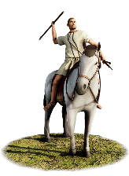
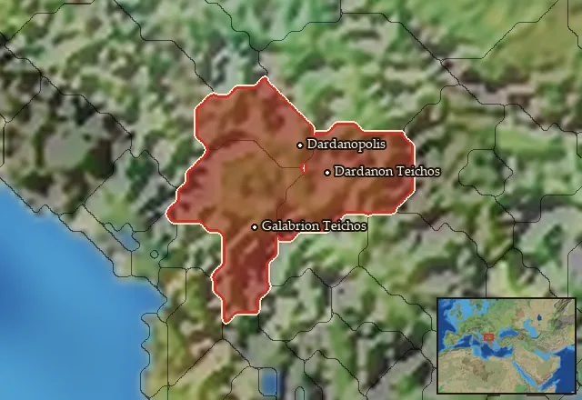

RTR: Imperium Surrectum
RTR: Imperium SurrectumDardanian Light Cavalry


Class: missile · Category: cavalry · Men per unit: 30
Description
Dardanian Light Cavalry, as its name suggests, is skirmisher cavalry, not intended for protracted combat but perfectly adept for harassing and harrying the enemy. These men are armed with the Sibyna spears or lances favoured by many Illyrians, as well as a bundle of javelins. They do not carry shield into combat, instead relying on their manoeuvrability to avoid harm. The Dardanian Light Cavalry are clad only in light tunics coupled with Phrygian and petasos hats, so a general must keep them away from ranged retaliation, instead using them to try and pick apart the enemy battle line.
Historical background
The Dardanians were one of the oldest Balkan peoples with a complex society, who were more than capable of raiding and defeating their local rivals, whether Illyrian, Thracian, Hellenic, or Celtic (Papazoglu, The Central Balkan Tribes in Pre-Roman Times (1978), p. 131). Dardanian marauding was extremely effective, with one particular raid on Philip’s Macedon in 220 BC resulting in the capture of over 20,000 prisoners (Justin 29.4), likely making a rich bounty of slaves. The Dardanians most famous and audacious raid of all would happen in 1st century BC, when they joined forces with the Skordiskoi and Maedi to pillage the temple of Delphi (Appian, Illyr. 4.8). Between them, they had looted so much that they managed to bribe Scipio into making a treaty with them during a Roman-led punitive raid against the perpetrators (Sasel Kos, Appian and Illyricum (2005), p. 212). As the second-century Roman author Justin (30.4) described in his abridged version of an earlier work, the Historiae Philippicae, he felt that the Dardanians' bellicose reputation was such that they “would be utterly impossible to resist” if they fought Rome alongside other Illyrians, as they had brutalised Philip V’s Macedonians so much that the spectre of Alexander the Great’s army was now dispelled. In doing so, they proved worthy of an alliance with Rome, and in 200 BC, the Dardanian (or possibly Pannonian and arguably King) Bato joined in a Roman invasion of Macedon (Wilkes, The Illyrians (1996) p. 150).
Strabo also concurred with this lofty assessment of Dardanian military prowess (7.5.6 C 315), heralding the Dardanians as one of the three most powerful Illyrian peoples alongside the Ardiaei and the Autariatae, which Papazoglu suggests could be because they had their own sense of common cause and specific style of development under central authorities and even kingdoms (Sasel Kos (2005), p. 247). Despite earlier alternations between alliance and conflict with Rome and their subsequent increasingly iron fisted control of Illyria and Thrace, the Dardanians kept marauding and raiding. C. Scribonius Curio was possibly even the first Roman commander to see the Danube, as he had to pursue agile Dardanian forces retreating there all the way from Thrace (Sasel Kos (2005), p. 492). The Dardanians were even attacked by Octavius in 39 BC, as they were “ever making incursions into Macedonia” (Illyr. 5.75.320). This indicates that even in their twilight years, the Dardanians never lost their pugnacious spirit, nor their desire for plunder.
Dardanian warring in the 2nd century BC meant that their lands spread and encroached ever further into the lands of renowned horse users like the Macedonians and Paionians. Their territory often centred on what is now modern Kosovo, then radiated eastwards to the river Ibar as far as Western Morava, and southwards through the hilly region of Osgovo, comprising multiple important settlements including Naissus and Scupi (Sasel Kos (2005), pp. 163-164). The wide-ranging and rugged nature of their territory came with a large variety of potential foes, making adaptation necessary. The Dardanians were proven innovators and integrators, often taking something from the enemies they fought, not least loot and slaves, but also technologies and techniques. They adopted machaira swords, long pikes, and the phalanx formations from their wars against Macedon (Parović-Pešikan, Grčka mahajra (1982); Iliev, The Dedication of Philip V of Macedon (2022), p. 77). Furthermore, they adopted shields and chainmail from the Skordiskoi, to the extent that Strabo (7.3.11, 7.5.12) thought they were a ‘Celto-Thraco-Illyrian mixture’. It is, therefore, likely that the Dardanians took horses from the Paonians, as Paonian coins depict one of their cavalrymen riding down a Dardanian warrior armed with large roundshield, a spear, and a helmet (BMC 4v, Paonian Kings, Patros, 335-315 BC, AR tetradrachm, Head of Apollo right, Horse and rider right, spearing fallen enemy).
Whilst evidence for the Dardanians being major cavalry users is unlikely to be found in literature, there is certainly evidence for them maintaining light skirmishing cavalry in a similar manner to many of their southern neighbours. Bridles were found in tumulus burial complexes in Dardanian territory (e.g. at Romaje, in modern Kosovo). Finding bridles alone would be one thing, but additional evidence points to the martial elites owning and using cavalry as amongst many of the various findings, five graves were found with long swords, and four of those graves also contained lance tips. Furthermore, one grave dubbed grave 9 contained nine lances, three of which had short points, the remaining six having long tips. Another area of the tumulus complex contained multiple lances and spears, alongside axes, and most importantly, one contained a horse bridle (Lippert and Matzinger, Die Illyrer (2022), p. 62). This highlights that the Dardanian elites considered the equipment to mount their horses of equal value to military equipment including their iconic Sibnya spears and lances. It also constitutes further evidence of the Dardanian propensity to innovate by melding their traditional war methods and love of fighting, with new technologies and techniques wherever appropriate.
Stats
| Rank in roster | Rank in roster | Rank in roster | Rank in roster | ||||||||
|---|---|---|---|---|---|---|---|---|---|---|---|
| Men per unit | 30 | █········· 8% | Attack | 9 | █········· 14% | Charge bonus | 13 | █████····· 53% | Defence | 14 | █········· 6% |
| · armour | 1 | █········· 0% | · defence skill | 13 | █········· 14% | · shield | 0 | █········· 0% | Morale | 7 | █········· 11% |
| Discipline | Normal | Training | Untrained | Recruitment cost | 1,269 dn | █········· 10% | Upkeep per turn | 511 dn | ██········ 22% | ||
| Turns to recruit | 2 |
Weapons
| Primary | Secondary | Primary | Secondary | Primary | Secondary | Primary | Secondary | ||||
|---|---|---|---|---|---|---|---|---|---|---|---|
| Attack | 9 | 6 | Charge bonus | 13 | 20 | Type | thrown · archery | melee · blade | Damage | piercing | piercing |
| Projectile | javelin | — | Range | 60 | — | Ammunition | 7 | — | Properties | Thrown | — |
Defence
| Primary | Secondary | Primary | Secondary | Primary | Secondary | Primary | Secondary | ||||
|---|---|---|---|---|---|---|---|---|---|---|---|
| Total | 14 | — | Armour | 1 | — | Defence skill | 13 | — | Shield | 0 | — |
Condition and terrain
| Hit points | 1 | Mount | light horse | Ground: scrub / sand / forest / snow | 0 / 0 / -4 / 0 | Charge distance | 40 |
| Formations | Square |
Technical stats
| Time between blows (primary / secondary) | 2.5 s / 2.5 s | Extra fatigue in hot climates | 0 | Spacing between men: close / loose | 2 × 4.8 m / 3.6 × 6.72 m | Default ranks | 5 |
In battle: Can form Cantabrian circle · Very good stamina
Who can recruit it
A core roster unit for one faction, which can raise it anywhere it holds the right building:
Any faction holding one of the provinces below can field it.
Exactly what a settlement must have, route by route (4)
| Building | Also requires | Building | Also requires | Building | Also requires | Building | Also requires |
|---|---|---|---|---|---|---|---|
| Any settlement | Garrison Building or Tier 1 Military Industrial Complex · Dardanian area of recruitment · Any Government (Dependency, Indirect Rule or Direct Rule) · Tier 2 Colony not built | Indirect Rule | Garrison Building or Tier 1 Military Industrial Complex · Tier 1 Colony | Direct Rule | Garrison Building or Tier 1 Military Industrial Complex · Tier 1 Colony | Homeland | Garrison Building or Tier 1 Military Industrial Complex |
Areas of recruitment

| Zone | Provinces | ||||||
|---|---|---|---|---|---|---|---|
| Dardanian | 3 |